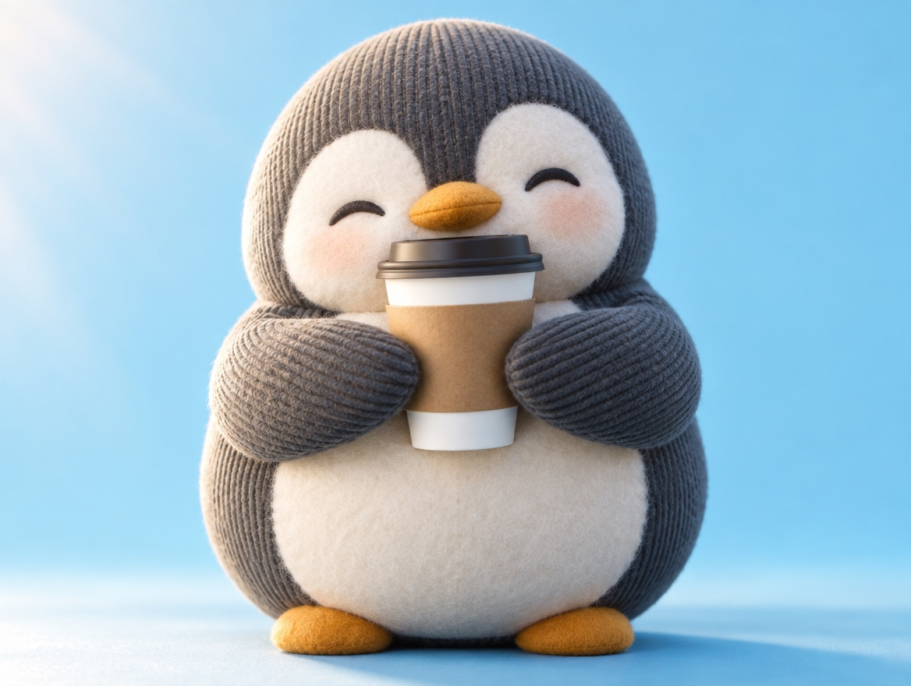

📝 DRAFT · 下書き — まだ本番に出していません · 下書き一覧
🐧 EVERYDAY LIFE⚡ 18 SEC
If you stop thinking things are normal, you say thank you more 🙏

The Trap
We say "thank you" less because we think everything is "normal."
Looks Normal
A train that comes on time and a clerk who smiles both look normal.
Hidden Days
But those people also have days when they feel sick or sleepy.
Imagine It
Try to imagine that they still do it well every day.
⚡ TRY IT
Flip the "normal" things
Tap a card to see the other side.
🙏 Thank-yous found 0/6
Each "normal" thing has a person behind it.
🌏The "normal" world is full of hidden effort. Thank you, everyone!
More Thanks
Then you naturally say "thank you" more.
📚 I learned this from the Japanese blog "Panda no Ondo".